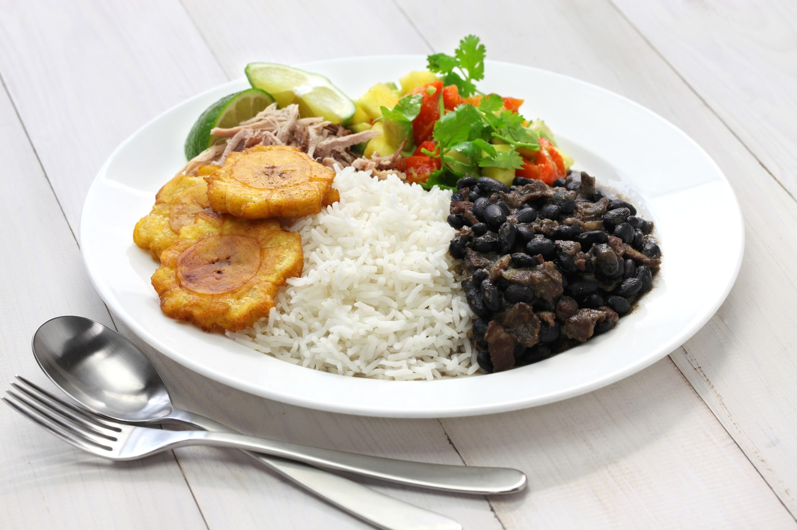

Origin of Cuban Food
My search for the Origin
Cuba is an island 90 miles off the Florida coast. It was the first and last Spanish colony established in the region. The food culture is the direct result of several factors intermixing: the history of the different people who settled there, its island location, and its tropical climate. Learn how imperialism, migrations and historical events influenced the island's food identity.
During the colonial era, Havana was an important trading port, and Spanish invaders passed through the city before moving on to other towns and islands. The Spanish brought cattle and pigs, which were incorporated into the foods. Many of the colonizers were from southern Spain; hence many Cuban dishes have their roots in Andalucia.
